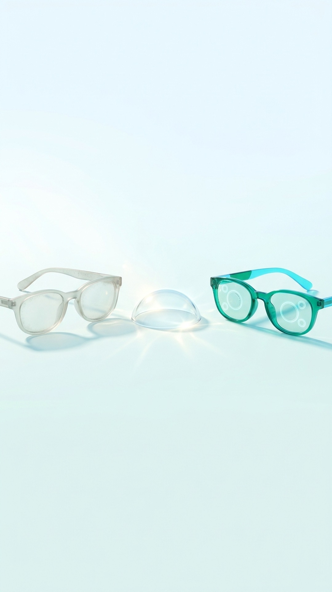
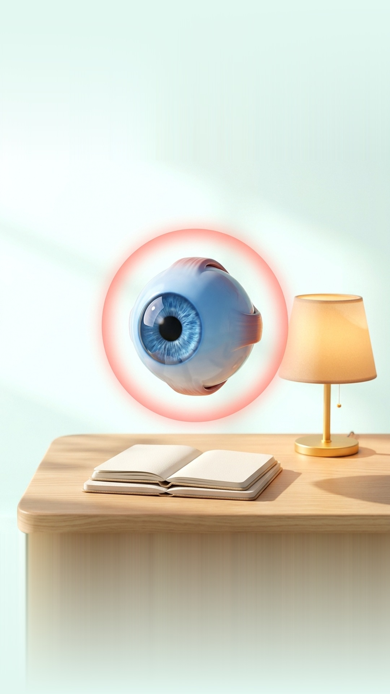
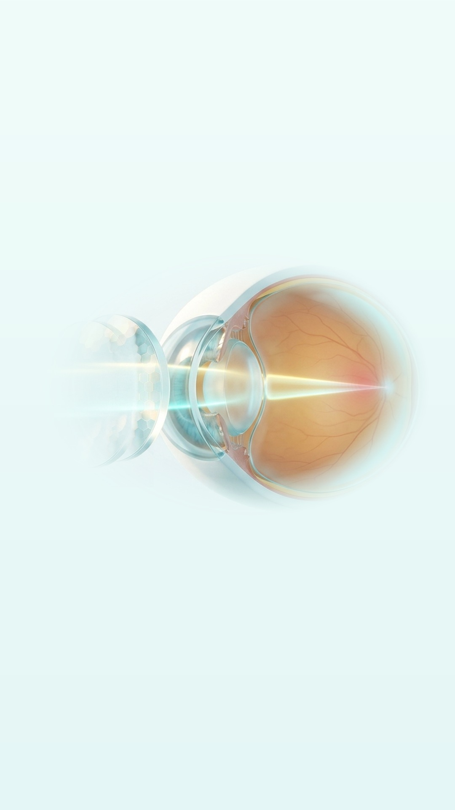
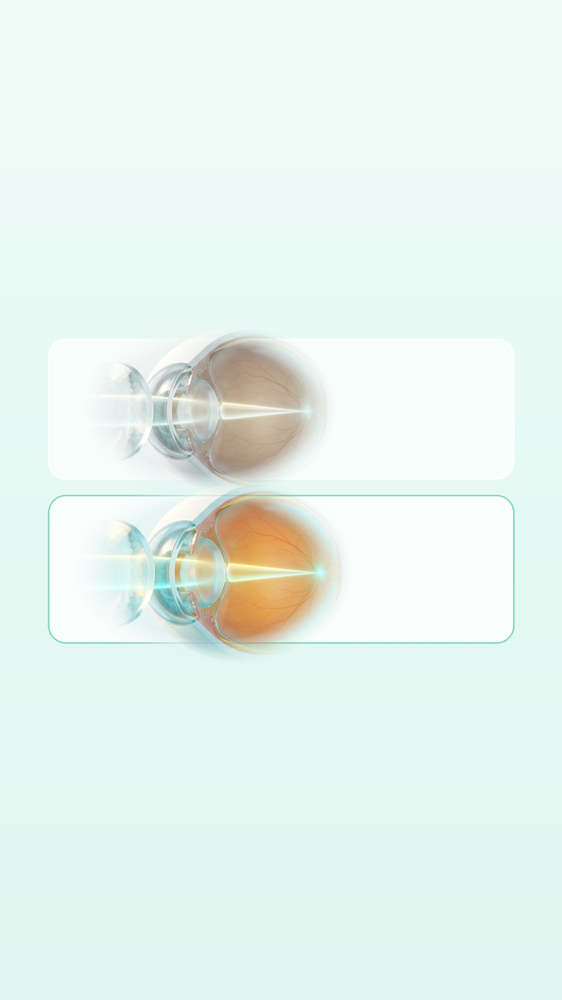
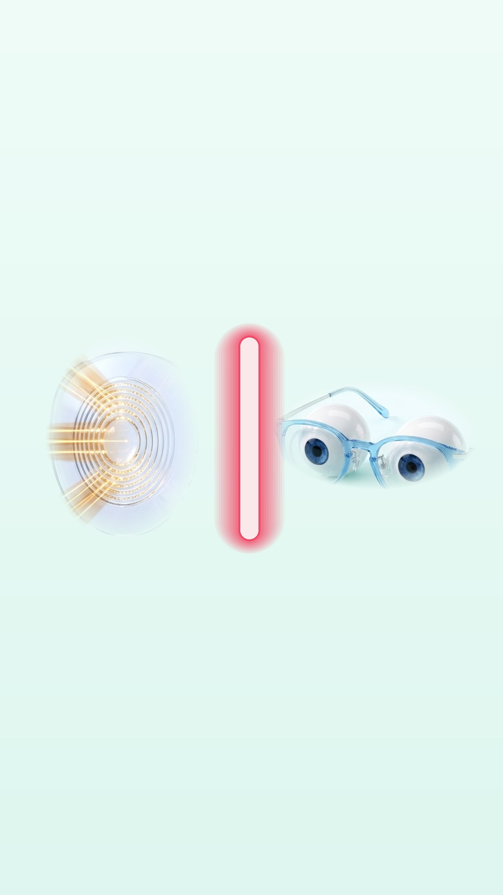

EP.15 · 换镜诊断树
① 查曲率
② 核离焦量
③ 测视功能
STEP 01 · ROOT DIAGNOSIS
第一副效果不好，第二副怎么换？
先看决定底层难度的「角膜曲率」
先看决定底层难度的「角膜曲率」
曲率高低不同，换镜排查方向完全相反！
第 1 副控不住 ➔ 别盲目重配
核心分水岭：先查角膜曲率 K 值
BRANCH A · 曲率高（天生眼轴较稳）
曲率高，戴镜效果还不好？
大概率不是镜片本身的问题！
大概率不是镜片本身的问题！
曲率高眼轴本来就不易涨，优先排查这两项：
CHECK 01 · 用眼负荷排查
近距离用眼过多？
读写时长超标、距离过近
CHECK 02 · 视觉功能排查
视功能是否太差？
调节滞后或集合能力不足
BRANCH B · 曲率低（底层防控压力大）
曲率低的孩子，第一副控不住
质保换同款镜片，照样控不住！
质保换同款镜片，照样控不住！
重点来了：曲率低、效果不好，问题到底出在了哪？
CAUSE 01 · 离焦量不够（拉力不足）
第一副低离焦，眼球追得快？
换第二副优先考虑「增加离焦量」
换第二副优先考虑「增加离焦量」
镜片光学离焦牵引力（Defocus Pull）
升级高离焦量 · 拉力拉满 ↑
× 第 1 副低离焦：拉力微弱，挡不住眼轴
✔ 第 2 副增加离焦量：强力把焦点拉回视网膜前
CAUSE 02 · 视功能拖后腿（信号受阻）
第一副本身就是高离焦还在涨？
离焦信号传不进去，再好也白搭！
离焦信号传不进去，再好也白搭！
SIGNAL TRANSMISSION · 离焦信号入眼监测
视功能异常阻断光路 · 高离焦信号无法抵达视网膜
信号受阻 ✕
GOLDEN SOP · 科学换镜排查三步法
怎么判断孩子属于哪种情况？
按这 3 步查清，不再白换镜片
按这 3 步查清，不再白换镜片
01
FIRST · 评估底层防控难度
先查「角膜曲率」高低
区分是高曲率用眼问题，还是低曲率高风险人群
02
SECOND · 评估镜片光学拉力
再查第一副「离焦量」够不够
若第一副为低离焦且眼轴追得快，第二副优先加离焦量
03
THIRD · 决胜信号接收通道
最后必查「视功能」好不好
绝不能忽略视功能盲目换镜片，否则换几副都涨度数！
KAKA VISION LAB
关注卡卡老师
找准涨度数真凶 · 第二副不再走弯路
COMMENT FOR ADVICE · 评论区留言诊断
发一下孩子 曲率 + 第一副镜片 + 眼轴变化
卡卡老师帮你看第二副怎么换！
卡卡老师帮你看第二副怎么换！
卡卡老师 · 视光小课堂
卡卡老师 · 视光小课堂
卡卡讲解中